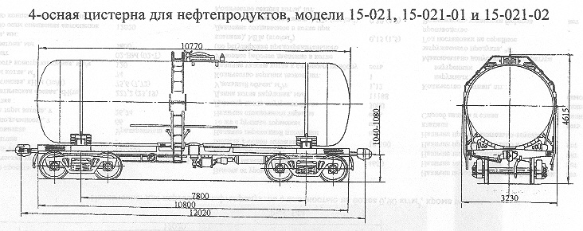

Назначение: для перевозки вязких нефтепродуктов
Параметры
| Номер проекта | |
| Технические условия | ТУ 32.066.001-93 |
| Модель вагона | 15-021 15-021-01 15-021-02 |
| Тип вагона | |
| Изготовитель | Рославльский ВРЗ |
| Грузоподъемность, т | 60 66 66 |
| Масса тары вагона, т | 23,2 23,9 25,7 |
| Нагрузка: статическая осевая, кН(тс) |
203,8(20,8) 220,2(22,5) 224,6(22,9) |
| погонная, кН/м(тс/м) | 67,8(6,9) 73,3(7,48) 74,8(7,63) |
| Объем котла, м3: полный |
73,1 72,38 72,38 |
| полезный | 71,7 70,99 70,99 |
| Скорость конструкционная, км/ч | 120 |
| Габарит | 02-ВМ(02-Т) |
| База вагона, мм | 7800 |
| Длина, мм: по осям сцепления автосцепок |
12020 |
| по концевым балкам рамы | 10800 |
| Высота от уровня верха головок рельсов максимальная, мм | 4615 |
| Количество осей, шт. | 4 |
| Модель 2-осной тележки | 18-100 |
| Наличие переходной площадки | нет |
| То же с ручным тормозом | нет |
| Наличие стояночного тормоза | есть |
| Диаметр котла внутренний,мм | 3000 |
| Длина котла наружная,мм | 10780 |
| Удельный объем котла, м3/т | 1,19 1,08 1,08 |
| Количество верхних люков, шт. | 1 |
| Наличие уклона котла к сливному прибору | есть |
| Условное рабочее давление в котле (по регулировке предохранительного клапана), МПа(кгс/см2) | 0,15(1,5) |
| Давление создаваемое в котле при гидравлическом испытании, МПа(кгс/см2) | 0,4(4,0) 0,5(5,0) 0,4(4,0) |
| Количество секций котла, шт. | 1 |
| Наличие паро-обогревательной рубашки | нет |
| Толщина изоляции | |
| Наличие теплоизоляции | нет |
| Наличие теневой защиты | нет |
| Наличие предохранительного клапана | нет |
| Наличие предохранительно-впускного клапана | есть |
| Способ налива и слива | Налив - верхний, слив - нижний самотеком |
| Количество лестниц, шт.: наружных |
2 |
| внутренних | 1 |
| Максимально допустимая температура загружаемого продукта, °C | |
| Год постановки на серийное производство | |
| Возможность установки буфера | нет |
Примечание: ширина при убранных ступеньках не более 3100мм